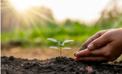
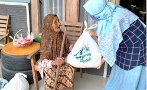
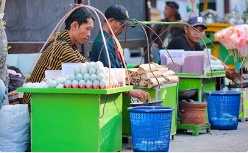
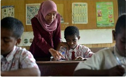
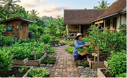

Ruang Belajar Bersama, Ketika Pengetahuan Tumbuh dari Warga
Membuka akses belajar lewat ruang aman, bahan bacaan, dan kebiasaan saling berbagi pengetahuan.
Baca artikelAspirasi Didengar, Informasi Terbuka, Aksi Terasa.
KABAR PPP / ARSIP EDITORIAL
Arsip editorial tentang pendidikan, lingkungan, kepedulian sosial, dan ekonomi masyarakat. Seluruh artikel serta tanggal publikasi di sini adalah contoh akademik, bukan laporan kegiatan PPP.
Membuka akses belajar lewat ruang aman, bahan bacaan, dan kebiasaan saling berbagi pengetahuan.
Baca artikel
Langkah kecil yang bisa menjadi percakapan bersama tentang sampah, air, dan ruang hijau.
Baca artikel
Mengapa mendengar kebutuhan dan menjaga pilihan warga penting dalam setiap bentuk kepedulian.
Baca artikel
Literasi usaha dan pertukaran pengalaman sebagai gagasan penguatan ekonomi di lingkungan sekitar.
Baca artikel
Memahami kebutuhan akses belajar yang beragam, dari pilihan waktu hingga format materi yang mudah dibaca.
Baca artikel
Kebun komunitas dapat dibayangkan sebagai tempat bertukar pengetahuan dan merawat lingkungan.
Baca artikelCoba gunakan kata kunci atau kategori yang berbeda.